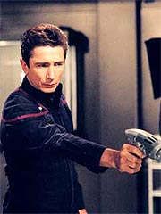
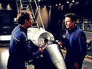
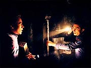
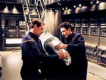

|
MANCHETE
DO EPISDIO
Tholianos
trazem novas surpresas
j famosa Guerra Fria Temporal
Episdio
anterior | Prximo
episdio
Sinopse:
A Enterprise encontra uma pequena nave deriva no espao. Archer ordena que ela seja trazida baa dos shuttles, onde a escotilha aberta e uma descoberta surpreendente realizada: o piloto da nave humano.
Enquanto o cadver levado enfermaria para investigao e potencial identificao, com base em anlise gentica, Archer no se pergunta se este no seria o corpo de Zefram Cochrane, que partiu em 2120 numa nave para um tripulante em uma rota desconhecida. O capito partilha o pensamento com o almirante Forrest, que aponta que, caso a identificao se confirme, pode ser a resoluo do mais misterioso caso de pessoa desaparecida daquele sculo.
Phlox conclui sua anlise e refuta a hiptese. Em vez disso, ele descobre que o cadver possui em seu genoma diversos trechos de DNA no-humano, incluindo genes Vulcanos e Rigelianos. O cdigo gentico do indivduo parece indicar que ele resultado de vrios sculos de mistura entre as vrias raas aliengenas -- algo que seria impossvel, exceto se aquele humano tivesse vindo do futuro.
 Essa nova teoria parece ganhar mais fora quando Trip e Reed investigam a nave na baa dos shuttlepods. Eles descobrem que o casco, quando no avariado, capaz de absorver totalmente radiao eletromagntica, tornando-se invisvel. Alm disso, eles verificam que a nave muito maior do lado de dentro do que do lado de fora, numa aberrante manipulao da geometria do espao-tempo. A dupla finalmente encontra um pequeno dispositivo que parece ser a "caixa-preta" da nave e decide lev-lo engenharia para mais estudos.
Para confirmar a suspeita, Archer decide ir aos aposentos de Daniels e usar o pequeno dispositivo-biblioteca supostamente vindo do futuro. Analisando seu contedo, eles confirmam a nave como um veculo construdo no sculo 31.
O sossego da Enterprise no dura muito, entretanto. Logo Archer contatado por uma nave de carga Suliban. O capito do cargueiro ordena que os humanos entreguem a nave capturada -- uma propriedade deles, segundo o Suliban. Archer obviamente se recusa, o que leva a um pequeno conflito armado. O cargueiro acaba batendo em retirada.
Archer volta a contatar o Comando da Frota Estelar e arranja para que a Enterprise encontre uma nave Vulcana, que dever levar a nave do futuro Terra para mais investigaes. Sem mais delongas, a nave parte para o ponto de encontro. Mas novamente a paz interrompida quando os Tholianos se aproximam e tambm clamam posse do veculo.
Num tom aparentemente mais amistoso, os Tholianos alertam a Enterprise para o perigo da nave, que est emitindo radiao temporal nas suas redondezas. Archer diz que capaz de se virar, mas os Tholianos insistem pela rendio do pequeno veculo. O capito da Enterprise ameaa ento destruir a nave do futuro, o que faz com que os aliengenas recuem.
T'Pol considera altamente arriscado o procedimento do capito e sugere que talvez a melhor opo seja mesmo destruir a nave do futuro. Archer, entretanto, est convencido de que precisa proteger o sculo 22 da Guerra Fria Temporal e descobrir o que est havendo, da a razo para preservar o veculo e estud-lo.
Na engenharia, Trip continua investigando o dispositivo e chega concluso de que no se trata de uma caixa-preta, mas possivelmente de um sistema sinalizador. Ele e Reed voltam baa dos shuttlepods e sofrem diversas repeties de um mesmo instante -- provavelmente efeito da radiao temporal mencionada pelos Tholianos.
Enquanto isso, a Enterprise volta a estar sob ataque. Os Sulibans voltaram com mais naves e esto determinados a capturar a nave do futuro. A agresso inclui uma invaso da nave, repelida por Reed e Trip na rea de carga.
 Archer tem a esperana de chegar ao ponto de encontro a tempo de obter ajuda da nave Vulcana, mas eles descobrem que os Vulcanos j foram atacados e desabilitados -- pelos Tholianos. Enquanto a Enterprise est indefesa no espao, sem motores e armas, Tholianos e Sulibans travam uma batalha para ver quem vai levar a nave do futuro.
Em vez de priorizar os reparos da Enterprise, Archer ordena que Trip faa de tudo para ligar o sinalizador da nave do futuro. Enquanto isso, ele e Reed vo instalar manualmente uma ogiva de um torpedo na nave para providenciar sua destruio. Os dois sofrem diversas vezes o efeito "dja v" antes experimentado por Trip e Reed, o que dificulta a execuo do plano.
Com muito custo, eles conseguem preparar a ogiva e liberam a nave do futuro no espao. Os Tholianos capturam o veculo com um raio trator, e Archer ordena que Reed detone a ogiva. O armeiro informa, entretanto, que os Tholianos foram capazes de desativar o explosivo. A nave parece perdida quando Trip consegue finalmente ativar o dispositivo sinalizador e, no momento seguinte, todos os traos da nave do futuro -- inclusive o cadver do piloto e o prprio sinalizador -- desaparecem sem deixar vestgios. Frustrados, os Tholianos partem sem dizer uma palavra.
Comentrios:
Se o anterior "Cease Fire" acertou em cheio ao tratar do tema da fundao da Federao,
"Future Tense" consegue fazer a mesma coisa pelo outro grande arco da srie, a Guerra Fria Temporal. Combinando de forma espetacular elementos atraentes aos fs antigos e novidades no universo da srie, a dupla de escritores Mike Sussman e Phyllis Strong mais uma vez nos oferece uma slida hora de entretenimento.
O nico defeito deste episdio o mesmo de todos os outros envolvendo a Guerra Fria Temporal -- s h elementos adicionando ao mistrio e praticamente nada aludindo a quaisquer respostas sobre esse grande e enigmtico conflito. Pode parecer um comentrio pouco significativo, mas ele ganha mais relevncia se levarmos em conta a impresso que os produtores do de que realmente no tm a menor idia de para onde pretendem conduzir essa histria.
 No voltamos a ver os "viles originais" da srie, o "Cara do Futuro" e Silik (este ltimo provavelmente pela indisponibilidade do ator John Fleck, que conquistou recentemente um papel como personagem regular em outra srie de TV), embora em esprito eles ainda estejam por aqui com os Sulibans, e temos agora uma nova faco introduzida -- os Tholianos.
Esse talvez seja o melhor movimento realizado pelo episdio -- o uso dos Tholianos ao mesmo tempo um saudvel afago aos fs da
Srie Clssica (esses aliengenas s foram vistos uma vez em
Jornada, em "The Tholian Web", embora tenha sido citados diversas outras vezes nas sries contemporneas) e uma tremenda renovada na viso que tnhamos desses aliengenas e de sua importncia.
O mais saboroso de sua apario a sua postura ambgua com relao Enterprise -- impossvel dizer, com base no que visto aqui, se eles so bem-intencionados ou mal-intencionados na Guerra Fria Temporal. Se esse elemento for mais explorado e aprofundado em episdios futuros, pode trazer um frescor bem-vindo at agora bvia diviso entre mocinhos e bandidos nesse arco de
Enterprise.
Outra referncia interessante da dupla Sussman & Strong Srie Clssica vem na forma da hiptese de Archer para explicar a nave abandonada -- poderia ser Zefram Cochrane? Os fs de longa data sabem que obviamente no: o grande inventor de fato partiu para uma regio desconhecida e nunca foi localizado, at a USS Enterprise, sob o comando de James T. Kirk, descobrir seu paradeiro, no episdio
"Metamorphosis".
Embora em geral seja algo ruim a audincia estar uma curva frente dos personagens, o efeito aqui da "hiptese furada" de Archer serve apenas para realar os aspectos charmosos de se fazer uma srie anterior s aventuras de Kirk, sem perder tempo demais com a pequena referncia para torn-la enfadonha ou mera encheo de linguia.
E, por falar em defesa da premissa da srie, esse episdio tambm derruba de forma bastante contundente o argumento de que Enterprise no oferece "tecnologia" ou "narrativa" suficiente para criar agitados e emocionantes episdios de ao e aventura. A sequncia de batalhas entre a Enterprise, os Sulibans e os Tholianos, com uma nave Vulcana deriva, provavelmente a mais espetacular utilizao de efeitos especiais nesta segunda temporada da srie -- mais pelo ritmo bem dosado das cenas do que por sua profunda inovao.
Toda a sequncia final parece manter o telespectador na ponta da cadeira, realmente preocupado com a situao da Enterprise. A viso da nave saindo de dobra e descobrindo os Vulcanos desabilitados desoladora no s para Archer e cia., mas para a audincia, que estava acostumada a ver os antipticos orelhudos salvando o dia sempre que necessrio (um exemplo clssico
"Breaking the Ice").
Como se tudo isso ainda no fosse suficiente, h um elemento valoroso, ainda que sutil, presente aqui: o universo fictcio de
Enterprise parece iniciar um processo de consolidao. A cooperao fcil e bem-vinda entre humanos e Vulcanos parece uma bela forma de fazer uma referncia (ainda que indireta) aos recentes eventos de
"Cease Fire". Naturalmente, a relao Terra-Vulcano est deixando de ser uma de subordinao para uma de fraternidade e colaborao mtua.
O segmento aqui claramente orientado ao, em detrimento dos personagens. Apesar disso, a natureza do episdio (filmado totalmente dentro dos cenrios da Enterprise e com praticamente nenhum personagem convidado) faz com que os tripulantes da nave tenham seus bons momentos.
 A relao amistosa e agradvel entre Trip e Reed segue sendo reforada e aprofundada, como vimos nos saborosos dilogos entre os dois enquanto trabalhavam na nave do futuro. Reed tem tambm a chance de reprisar uma cena que lembra bastante, ao menos em ao e elementos, a que ele fez com Archer para desarmar a mina Romulana em
"Minefield". Desta vez, entretanto, eles precisam desmontar um torpedo.
Phlox ganha um providencial dilogo com T'Pol que ajuda a estabelecer um pouco mais da "filosofia otimista e abraadora" do Denobulano, alm de mostrar a decrescente resistncia da Vulcana hiptese de viagens no tempo. E, mais esquecidos do que nunca, Mayweather e Hoshi Sato fazem apenas cenas residuais. O segmento traz tona uma preocupao crescente: estaria Hoshi se tornando uma segunda Mayweather? Esperemos que no.
Archer e T'Pol participam de algumas piadinhas engraadas a respeito da futura relao de cunho sexual entre humanos e Vulcanos no futuro, e o capito da Enterprise mais uma vez reafirma a noo de que cresceu, amadureceu e est mais do que nunca dominando as situaes que ele enfrenta. Isso especialmente notvel quando T'Pol se ope s suas decises, mas mostra profundo respeito por elas e segue-as sem pestanejar.
Alm disso, o capito mostra que a Enterprise vai mergulhar de cabea na confuso da Guerra Fria Temporal, dando a entender que a audincia finalmente pode ter a esperana de obter algumas respostas -- assim que os produtores da srie as inventarem, sem dvida alguma.
Enfim, depois de sermos brindados por interessantes momentos de personagens, imersos numa histria eletrizante de ao e aventura dirigida com competncia por James Whitmore, Jr., recebemos um belo de um "reset button", com a nave do futuro voltando ao futuro, os Sulibans massacrados e os Tholianos de volta a seu mundo. Tudo termina como comeou -- e isso pode ser decepcionante a longo prazo, caso os produtores no decidam retomar o tema em breve, mostrando desdobramentos deste episdio.
De toda maneira, olhando para o segmento individualmente, temos uma slida hora de diverso e um roteiro agradvel e por vezes brilhante, trazendo tona vrias das melhores qualidades da srie.
Citaes:
Archer - "If a human and a Vulcan did have a child... I wonder if hed have pointed ears?"
("Se um humano e um Vulcano tiverem uma criana... pergunto-me se ela ter orelhas pontudas?")
Phlox - "I believe in embracing surprises."
("Eu acredito em abraar surpresas.")
Reed - "And you call yourself an explorer?"
("E voc chama a si mesmo de explorador?")
Tucker - "Whats the fun in exploring if you know how it all turns out?"
("Qual a graa de explorar se voc sabe como tudo termina?")
Archer - "I wonder if they [Vulcan High Command] will believe that humans and Vulcans will be swapping chromosomes one day?"
("Eu imagino se eles [o Alto Comando Vulcano] vo acreditar que humanos e Vulcanos estaro trocando cromossomos algum dia?")
TPol - "Theyre more likely to believe in time travel."
(" mais provvel que eles acreditem em viagem no tempo.")
Trivia:
 O episdio mostra a primeira apario dos Tholianos em
Enterprise, e a segunda em Jornada nas Estrelas. Sua estria foi no episdio
"The Tholian Web", da Srie Clssica.
O episdio mostra a primeira apario dos Tholianos em
Enterprise, e a segunda em Jornada nas Estrelas. Sua estria foi no episdio
"The Tholian Web", da Srie Clssica.
At pouco tempo antes da exibio, o nome do episdio era listado como "Crash Landing".
Brannon Braga comentou o episdio. "Temos outro segmento da Guerra Fria Temporal vindo a, e os Tholianos vo fazer uma espcie de apario-surpresa no episdio. Sugerimos que eles podem estar envolvidos de algum modo como outra faco na Guerra Fria Temporal. Ento eles no so apenas uma espcie que encontramos. Eles podem ter um papel maior."
Ficha
tcnica:
Escrito por Mike Sussman &
Phyllis Strong
Direo de James Whitmore, Jr.
Exibido em 19/02/2003
Produo:
042
Elenco:
Scott
Bakula como Jonathan Archer
Jolene Blalock como
T'Pol
John Billingsley
como Phlox
Anthony Montgomery
como Travis Mayweather
Connor Trinneer como
Charlie 'Trip' Tucker III
Dominic Keating como
Malcolm Reed
Linda Park como Hoshi Sato
Elenco convidado:
Vaughn Armstrong como almirante Forrest
Cullen Douglas como soldado Suliban
Episdio
anterior | Prximo
episdio
|